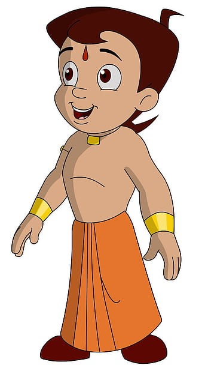
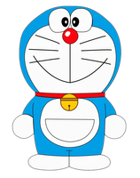
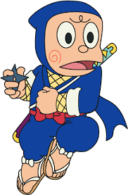
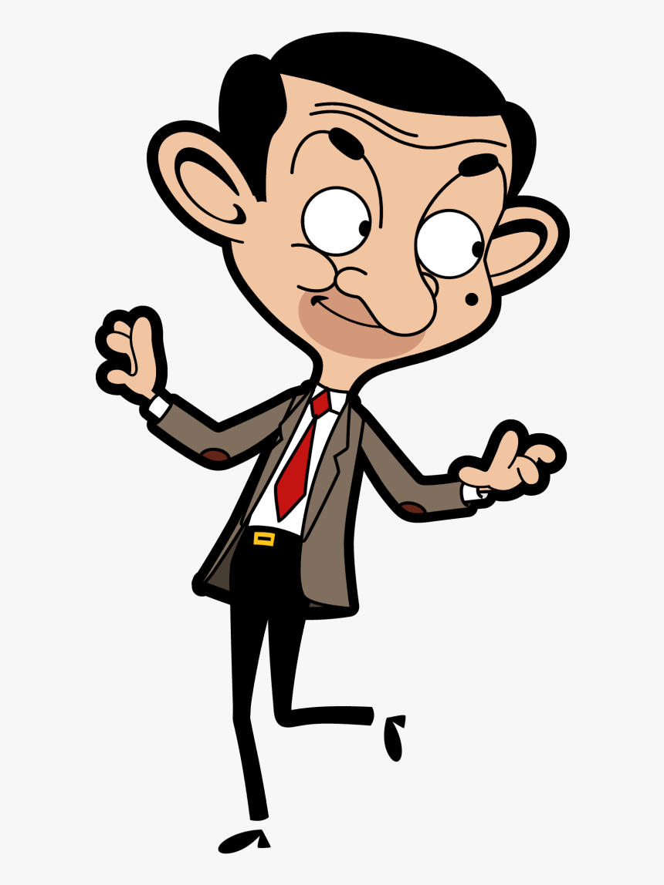

Why People Get Attached to CARTOONS ?
People love watching cartoons irrespective of their age; a kid is always alive inside us, as shown by the Share of Cartoon Network Viewer by Age. Cartoons are a great stress buster and can help people relax in times of strain, especially 2D animation. However, it can be a painstaking task to find some decent free websites to watch cartoons online in HD. To facilitate your quest to find the best free sites to watch cartoons online, I've compiled a list of free online resources that quickly offer high-definition streaming of cartoons. And I will also show you a fantastic tool that can help you cartoon yourself.
The most popular cartoon series of all, Doremon is a popular cartoon in India. It was a Japanese manga series that was famous worldwide after its dubbing. The major characters Doremon itself, Nobita, Shizuka, and others were also very famous.
Famous characters

Chhota Bheem
Chhota Bheem: Bheem is the main protagonist of the show. He is an adventurous, fun-loving but virtuous boy who is gifted with superhuman strength. This strength can be powered up by consuming laddoos, his favourite food. Bheem appears bare-chested, wearing an orange dhoti and a gold pendant. He has brown hair.

Doremon
Doraemon is a Japanese manga series written and illustrated by Fujiko F. Fujio. The manga was first serialized in December 1969. Its chapters were collected in 45 tankōbon volumes published by Shogakukan from 1974 to 1996. The story revolves around an earless robotic cat named Doraemon, who travels back in time from the 22nd century to aid a boy named Nobita Nobi.

Ninja Hatori
Ninja Hattori-kun is a Japanese manga series written and illustrated by Motoo Abiko (initially credited as Fujiko Fujio and later as Fujiko Fujio A) which was serialized between 1964 and 1988. It was later adapted into a television drama that aired on TV Asahi from 1966 - 1968.

Mr.Bean
The Animated Series (simply known as Mr. Bean) is a British animated sitcom produced by Tiger Aspect Productions in association with Richard Purdum Productions and Varga Holdings (for the first season). Based on the popular live-action television sitcom of the same title created by Rowan Atkinson and Richard Curtis.